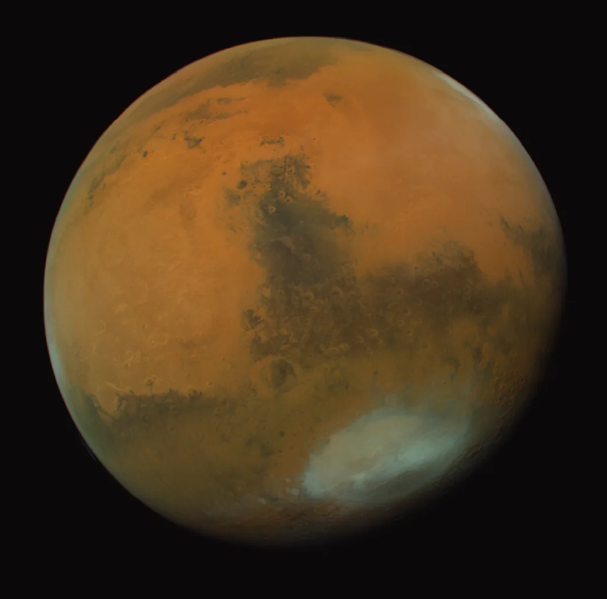
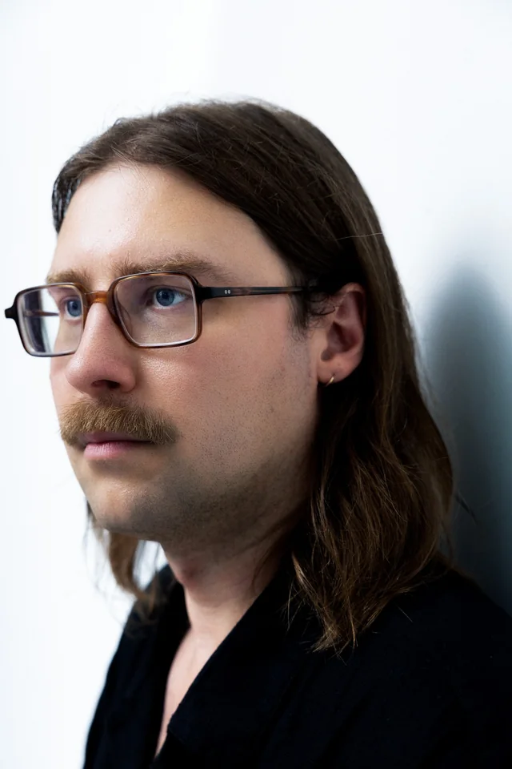
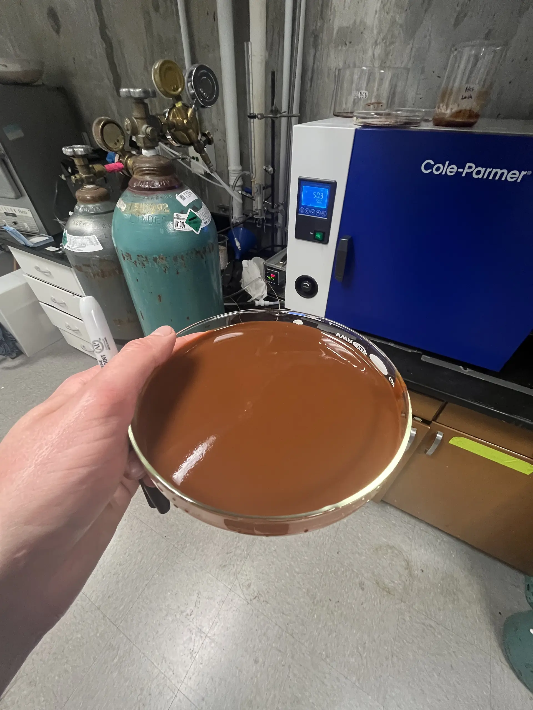
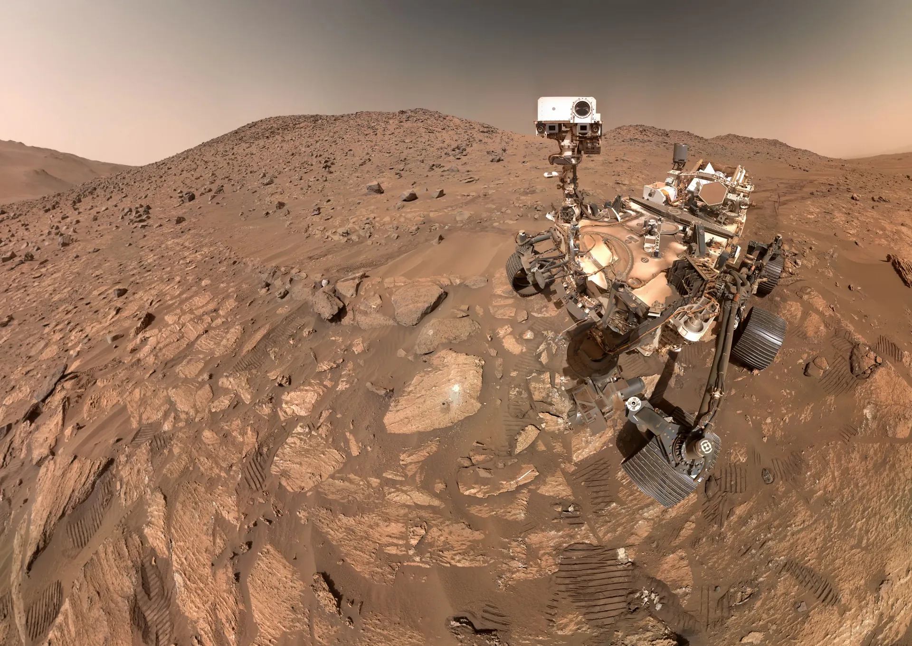
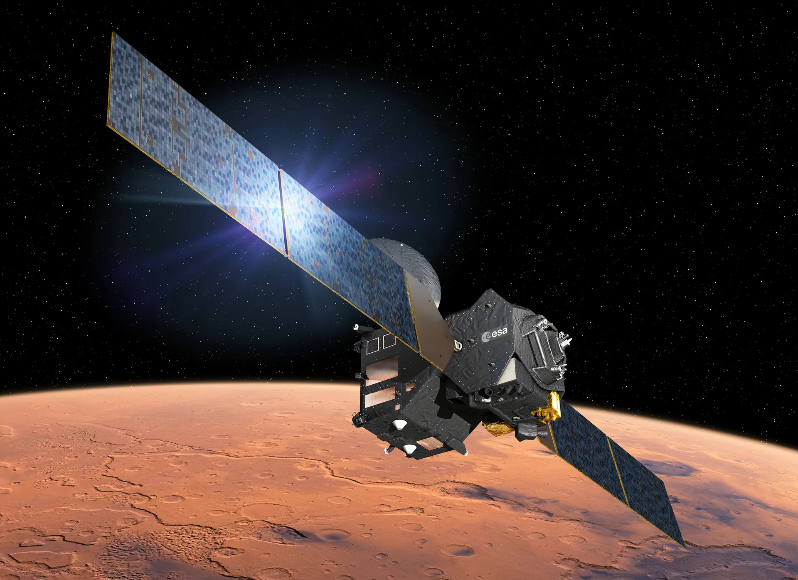
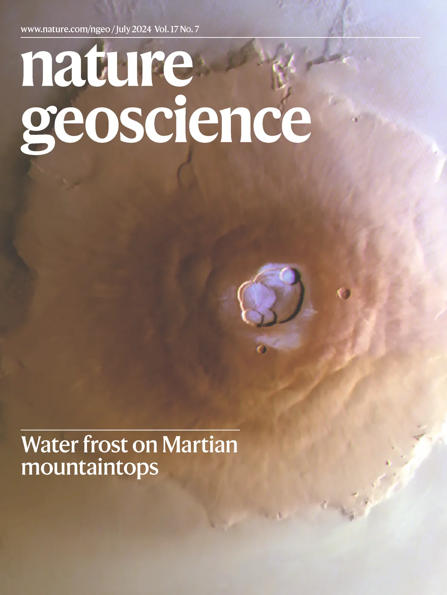
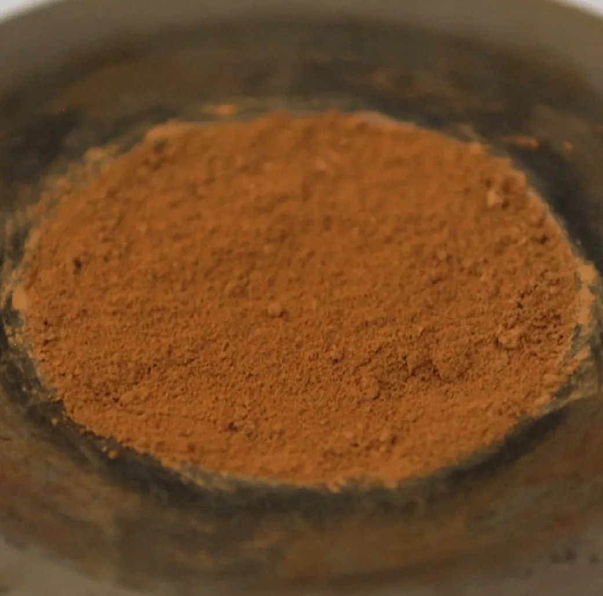

I study water–rock interactions on early Mars and ask whether its ancient environments could have supported life. Did life leave its mark? Answering that means working across every scale the planet offers — from a grain of dust to the whole globe.


I synthesize iron minerals to reconstruct environmental conditions on ancient Mars.

With Perseverance I investigate Martian rocks up close, searching for traces of past life.

From orbit I map water-rich minerals, tracing where Mars was once habitable.
I discovered morning water frost on the solar system's tallest volcanoes, where it was thought impossible, in TGO/CaSSIS images. The finding made the cover of Nature Geoscience.


I found that the planet's red dust owes its colour to ferrihydrite, not hematite as long assumed. Because ferrihydrite forms in cool water, it tells us early Mars was wetter, colder, and more habitable than previously thought.
Off the clock, I'm a DJ and radio host. As Teller of Blue on NTS.live and Radio Vilnius, I blend experimental electronic music with planetary science, sharing Mars with people who'd never pick up a journal.